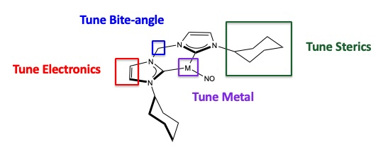
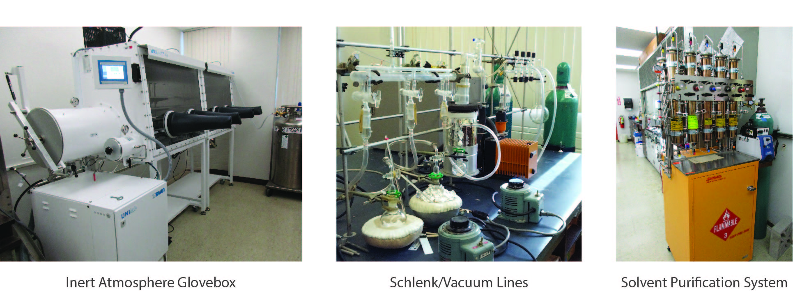
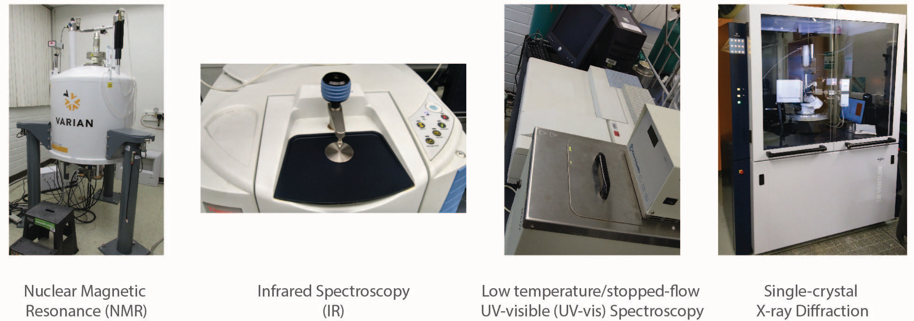
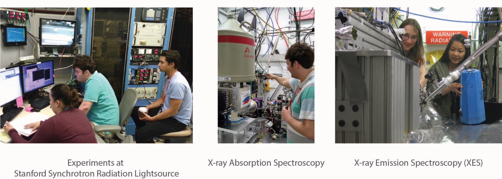

Research
The Stieber Lab focuses on solving problems through complementary efforts in synthetic inorganic chemistry, spectroscopy and computational chemistry. Current directions in the group include:
● Synthesisis of novel first-row transition metal complexes with bidentate N-heterocyclic carbene ligands. These are being studied in the group for NO activation, CO2 activation, and C-F activation.

● Design and synthesis of first-row transition metal complexes for electrochemical CO2 reduction.
● Expanding the scope of X-ray emission spectroscopy to allow for identification of small molecules (eg. NO, NO1-, NO2-) bound to transition metal centers. Results of this work will be applied to understanding how biological systems reduce and capture airborne pollutants.
● Small molecule crystallography
● Multiplet (Configuration Interaction) calculations of f-block systems and spectra to understand bonding with f-elements.
Students in the lab will have the opportunity to learn the following techniques and methods:
Synthesis
Characterization
Spectroscopy Development
Computation
Density functional theory (DFT)
Complete active space self-consistent field (CASSCF)
Multiplet theory
Collaborators
Timothy Warren - Michigan State University (link)
Shiyu Zhang - The Ohio State University (link)
Stefan Minasian - Lawrence Berkeley National Laboratory(link)
Nicholas Ball - Pomona College (link)
Subrata Kundu - Indian Institute of Science Education and Research (IISER) Thiruvananthapuram (link)
Dimosthenis Sokaras & Thomas Kroll - Stanford Synchrotron Radiation Lightsource
Perumalreddy Chandrasekaran - Lamar University (link)
Hasan Arslan - Bucknell University (link)
Erin Gray - Washington and Lee University (link)
Kimberly Choquette - Drew University (link)
Caitlin McMahon - University of North Carolina Asheville (link)
Christopher Pollock - Cornell High Energy Synchrotron Source (link)